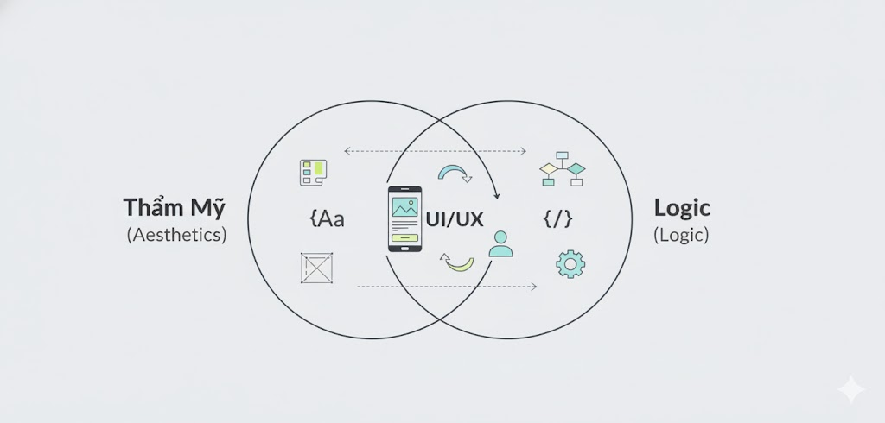
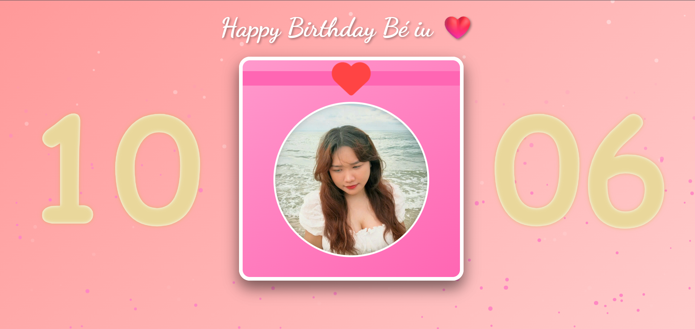

Trong suốt những năm đầu đại học, tôi đã hoàn toàn đắm chìm trong thế giới của thiết kế đồ họa. Adobe Photoshop và Illustrator không chỉ là công cụ, mà là không gian sáng tạo nơi tôi thể hiện tư duy và thẩm mỹ của mình. Tôi tin rằng đây sẽ là con đường sự nghiệp của tôi. Thế giới của công nghệ, với những dòng code logic và khô khan, dường như không dành cho tôi.
Bước Ngoặt Từ Tầm Nhìn Thực Tế
Bước ngoặt của tôi không phải là một khoảnh khắc "Eureka" lãng mạn, mà là một quyết định chiến lược dựa trên quan sát thực tế. Vào khoảng năm 2024-2025, tôi nhận thấy sự trỗi dậy vũ bão của Trí tuệ Nhân tạo (AI) trong lĩnh vực sáng tạo. Các công cụ AI tạo sinh (Generative AI) ngày càng làm tốt hơn các tác vụ đồ họa cơ bản—từ thiết kế logo, poster đến chỉnh sửa hình ảnh.
Tôi nhận ra rằng ngành đồ họa, ít nhất là ở cấp độ thực thi (execution), đang đối mặt với nguy cơ bị tự động hóa. Đứng trước tương lai này, tôi biết mình phải thay đổi.
Tôi không muốn cạnh tranh với một cỗ máy có thể tạo ra hàng ngàn phương án trong vài giây. Tôi muốn làm công việc mà AI khó có thể thay thế: sự thấu hiểu con người và tư duy hệ thống.
UI/UX: Cầu Nối Của Sự Chuyển Dịch
Đó là lúc tôi tìm đến Thiết kế Giao diện (UI) và Trải nghiệm Người dùng (UX). Đây là một bước đệm hoàn hảo. Nó vẫn đòi hỏi gu thẩm mỹ và các nguyên tắc thiết kế mà tôi đã rèn luyện, nhưng mục tiêu cuối cùng không phải là một tấm ảnh "đẹp", mà là một sản phẩm "dễ dùng".
UI/UX tập trung vào tâm lý học, vào hành trình của người dùng, vào việc giải quyết vấn đề của họ. Đây là tầng sâu về logic và sự đồng cảm mà tôi tin rằng AI sẽ mất rất nhiều thời gian nữa mới có thể chạm tới.
Từ Thiết Kế Đến Hiện Thực Hóa: Thử Thách Frontend
Tuy nhiên, sau một thời gian làm UI/UX, tôi lại gặp phải một rào cản khác. Tôi có thể tạo ra những bản thiết kế "pixel-perfect" trên Figma, nhưng sản phẩm cuối cùng khi qua tay lập trình viên luôn có những khác biệt nhỏ—những chi tiết làm giảm đi trải nghiệm mà tôi đã dày công thiết kế.
Để thực sự kiểm soát được trải nghiệm người dùng từ đầu đến cuối, tôi hiểu rằng mình không thể chỉ dừng lại ở bản vẽ. Tôi phải tự mình biến bản vẽ đó thành một sản phẩm sống. Đây là lúc tôi quyết định dấn thân vào Frontend Development.
Vượt qua rào cản tư duy
Việc học code (HTML, CSS, và đặc biệt là JavaScript) là một sự thay đổi hệ điều hành tư duy. Tôi phải chuyển từ não phải (sáng tạo, tự do) sang não trái (logic, cấu trúc, chính xác tuyệt đối). Một dấu chấm phẩy sai chỗ có thể phá hỏng tất cả. Những khái niệm như biến, hàm, vòng lặp ban đầu thực sự là một thách thức.
Thành Quả: Khi Code Mang Lại Hạnh Phúc
Với tư cách là một sinh viên năm 4, tôi đã trải qua nhiều đồ án chuyên nghiệp. Tôi đã xây dựng các PWA phức tạp, gọi API, xử lý dữ liệu động. Những dự án đó chứng minh rằng tôi có *kỹ năng* và *năng lực kỹ thuật*.
Nhưng "chiến tích" rực rỡ nhất mà tôi đạt được, lại không phải là một đồ án phức tạp. Đó là một trang web chúc mừng sinh nhật đơn giản tôi tự tay code tặng người yêu mình.
Về mặt kỹ thuật, nó có thể không phức tạp bằng các dự án khác. Nhưng về mặt *mục đích*, nó là đỉnh cao. Đó là lần đầu tiên tôi vận dụng toàn bộ năng lực của mình—từ thiết kế UI, chọn màu sắc, đến các hiệu ứng animation mượt mà bằng CSS và logic tương tác của JavaScript—chỉ cho một mục tiêu duy nhất: mang lại niềm vui và sự bất ngờ cho một người. Từng dòng code tôi viết ra đều được trau chuốt, không phải vì điểm số, mà vì cảm xúc.
Khi cô ấy hạnh phúc bật khóc lúc nhìn thấy trang web, tôi nhận ra đó mới là thành công lớn nhất. Trang web đó, đối với tôi, là "code đẹp nhất" mà tôi từng viết. Nó chứng minh rằng tôi đã hoàn thành mục tiêu ban đầu của mình: Tôi không chỉ học code để *kiến tạo*, tôi học code để *kết nối* và *mang lại hạnh phúc*.
Kết Luận: Vị Thế Mới Trong Kỷ Nguyên AI
Nhìn lại, quyết định chuyển hướng là hoàn toàn đúng đắn. Tôi không còn lo sợ AI sẽ "thay thế" mình. Giờ đây, tôi đứng ở một vị thế độc đáo: một nhà phát triển hiểu sâu về thiết kế và một nhà thiết kế có khả năng hiện thực hóa ý tưởng bằng code.
Tôi có thể giao tiếp hiệu quả với cả hai thế giới. Trong kỷ nguyên AI, năng lực quý giá nhất chính là khả năng liên kết các lĩnh vực—từ thấu hiểu con người (UX), đến thẩm mỹ (UI), và cuối cùng là sức mạnh kiến tạo (Code). Thành công của dự án cá nhân đó đã khẳng định con đường tôi chọn là hoàn toàn đúng đắn.